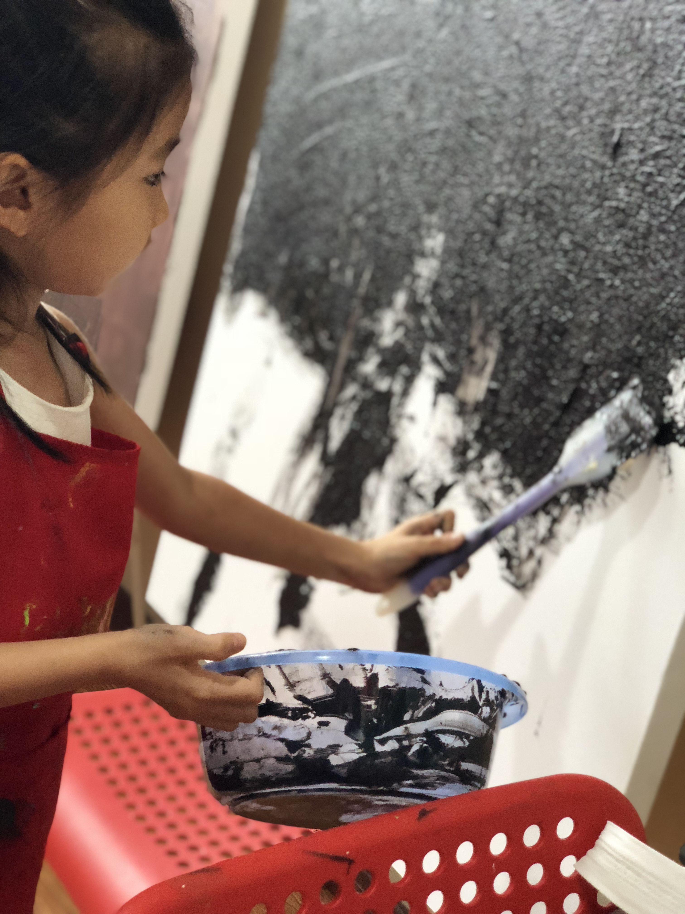

Haoyi Song
PhD Candidate, UTD
Professional Artist
Artist Statement
My work investigates how women's bodies become sites of emotional governance, where pain, discipline, and transformation are moralized and socially coded. I use everyday objects, beds, chairs, pillows, garments, as metaphors for endurance, containment, and relational spaces.
Painting is integral to my practice: through transparency, erasure, repetition, and layered surfaces, I allow the canvas to become an archive, a memory, and a testimony. At the same time, I explore how different media articulate meaning in distinct ways.
Grounded in cross-cultural perspectives, my art highlights both shared human experiences and cultural specificities in how bodies, identities, and emotional regimes are constructed.
← Back to Home
Background
[Add additional biographical information, education, exhibitions, awards, or other background details here.]
← Back to Home
Research
[Describe your research interests, artistic investigations, and theoretical frameworks
that inform your practice. Discuss the concepts you explore through your work.]
[Add more details about your research methodology, influences, and ongoing investigations.]
← Back to Home
Paintings
Homeland Series (2008)
This series used a typical structure and pattern found in traditional Chinese painting. It expresses sadness towards the decay of traditional culture.
The observational paintings were created in the fall season, with objects representative of the decay present in the natural world, such as dead leaves and discarded implements.
The art conveys the vanishing of one's homeland and traditional life in childhood due to the rapid development of the economy and modern technology.
Homeland I
Oil on Paper, 40cm × 80cm (2008)
Homeland II
Oil on Paper, 20cm × 80cm (2008)
Homeland III
Oil on Paper, 30cm × 80cm (2008)

Homeland IV
Oil on Paper, 30cm × 80cm (2008)

Homeland Series
Installation View
Floating Dreams (2009)
This series of work illustrated my childhood memories. The freedom of exploration and joy in adventure disappeared in adulthood but flash back in fantasy and dreams.
Floating Dream
Oil on Canvas, 48 x 60 inches (2009)
Floating Dream
Oil on Canvas (2009)
Floating Dream
Oil on Canvas (2009)
Floating Dream
Oil on Canvas (2009)
Floating Dream
Oil on Canvas (2009)
Floating Dream
Oil on Canvas (2009)
Porter Sketches (2011)
Portrait | 22 x 30 inches | Pencil on paper
This series was composed of observational sketches for porters, who represent the laboring class in Chongqing, a city located in southwest China.

Porter I
Pencil on Paper, 22 x 30 inches (2011)
Porter II
Pencil on Paper, 22 x 30 inches (2011)
← Back to Home
Installation
Probes (2018)
Inflatable, light-infused installation | 141 x 78 x 55 inches
Materials: Acrylic, plastic, LED lights, sound speakers
This installation was set in a dark room to integrate the beauty of movement with rhythmic music change.
This project aimed to present the interaction between society and women, especially how women respond to societal pressures.
Gentle, shifting color probes represent the soft but determined female spirit.
Exposure (2019)
Collage | 22 x 30 inches
Materials: Paper, cyanotype emulsion, sunlight, magazines, capsule blisters, wires, and nails
This series of collage work incorporated the cyanotype technique and mixed materials from daily life.
This project expressed the struggles of people exposed to materialism and commercialism.

Installation
Documentation
← Back to Home
Teaching Experience
K-12 Art Education - Teaching various mediums including oil painting, collage, clay relief, and drawing.

Class Activities
K-12 Teaching
Class Activities
K-12 Teaching
Class Activities
K-12 Teaching
Oil Painting Class
K-12 Teaching
Oil Painting Class
K-12 Teaching
Clay Relief
K-12 Teaching
Collage Class
K-12 Teaching
Student Exhibition
K-12 Teaching
Student Exhibition
K-12 Teaching
← Back to Home
Directed Events
As a director and community artist, I create participatory performances that bring together diverse communities through collaborative art-making.
My work integrates performance, visual arts, and social engagement to address themes of cultural memory, labor, healing, and human connection.
The Promise of a Garden & 5000 Flowers Project
Leeds Playhouse, University of Leeds, UK | August 2021
A major community theatre production co-produced with The Performance Ensemble, Leeds Older People's Forum, and Leeds 2023.
The Quarry Theatre at Leeds Playhouse was transformed into a magical garden where a company of older performers shared stories, visions, and dreams of what has been and what might happen tomorrow.
The 5000 Flowers Project: A city-wide participatory art initiative inviting the people of Leeds to create flowers for the garden installation.
The project engaged community venues, schools, colleges, day centres, care homes, and neighborhood networks. Each flower was photographed and acknowledged, combining the art of nature with human creativity.
"Nature has been a faithful companion in lockdown. This production blended performance, dance, music, film and photography as a moment for Leeds to remember and gather strength to move past the pandemic."
Performances: August 18-21, 2021 at Leeds Playhouse
Venue: Leeds Playhouse, Playhouse Square, Quarry Hill, Leeds LS2 7UP

Event Setup
Documentation
QSMC 2018 Evening Party
Factory Workers Program, China | 2018
In electronics factories in China, the suicide rate is very high. In order to brighten the spirits of factory workers, I designed and directed a program for their benefit.
My responsibilities included orchestrating the stage design, making props, creating costumes, and directing various types of visual artists in the performances.
.jpg)
.jpg)
.jpg)